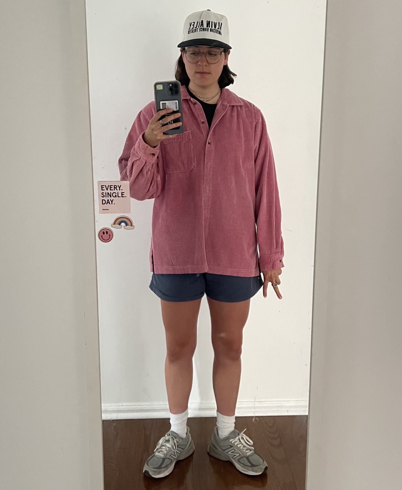

TRUDY PAINTER

3rd year undergrad at MIT double majoring in computer science and comparative media studies.
Currently working on Computer-Aided Synthesis at the MIT Media Lab with the Viral Communications Group.
Interested in exploring data with code, building systems from scratch, and quantifying effects of media. Also likes phone photography, running+biking, magazines+zines, clothes, and music.